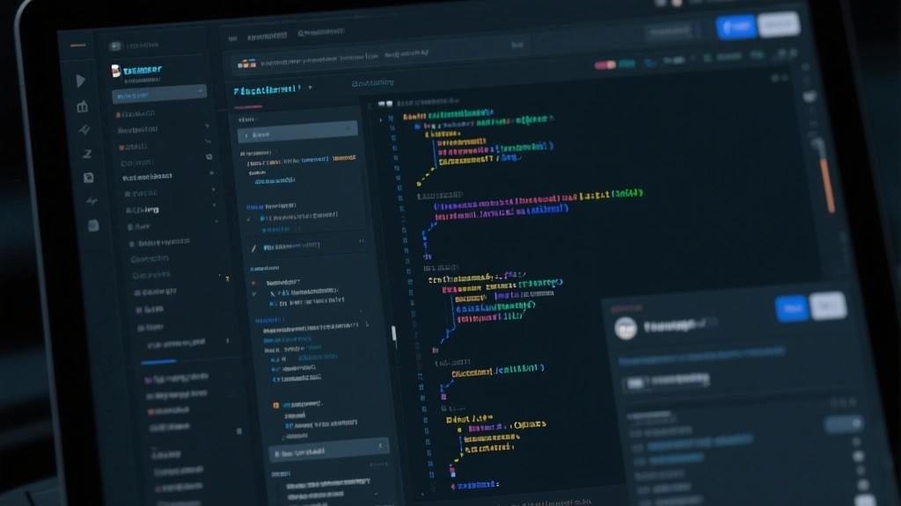

You don’t have to be a big brand to run smart, automated email experiments. This article shows how to harness creative automation to lift opens, clicks, and revenue—without losing control of brand voice or list health.
1) Map a 3-step automation edge
Start with a tight, 3-step automation pattern that nudges readers toward engagement at moments that matter: welcome, reactivation, and a post-click follow-up. The core idea is to align creative assets with behavioral signals, not just time-based triggers.
Implementation tips: map user intent to a short sequence, push a unique creative element at each step, and measure micro-conversions (opens, clicks, forwards) rather than vanity metrics.
2) Color and copy that spark curiosity
In a crowded inbox, design and language should create a moment of recognition. Use a distinctive color pair, a provocative subhead, and a one-line takeaway that promises value. The email language should read like a focused advisor, not a generic brochure.
Experiment with 2–3 variations per send and prefix subject lines with a fragment of the benefit to help readers decide at a glance.
3) Close with a measurable action
Close loops with a clear next step: a demo, a free trial, or a deep-dive article. Tie the CTA to a dataset-driven benefit (e.g., “See how your industry performs in real time”).

Inbox clutter and feature fatigue make even good email ideas fail to resonate.
A tight automation edge with creative hooks, measured by real micro-conversions, not vanity metrics.
- Define a 3-step automation blueprint for your brand
- Test 2–3 variations per email to learn what resonates
- Track micro-conversions and tie them to specific creative outcomes
- Stage 1: Discover opportunities in your current campaignsLook for touchpoints with high drop-off
- Stage 2: Build quick-hit creative variationsFocus on a single variable per test
- Stage 3: Measure impact and scale winnersMove budget to top performers
Subject lines with value-first phrasing outperform generic perks in most experiments.
Closing thought
Automating with a clear creative edge can unlock sustainable gains without sacrificing brand integrity.